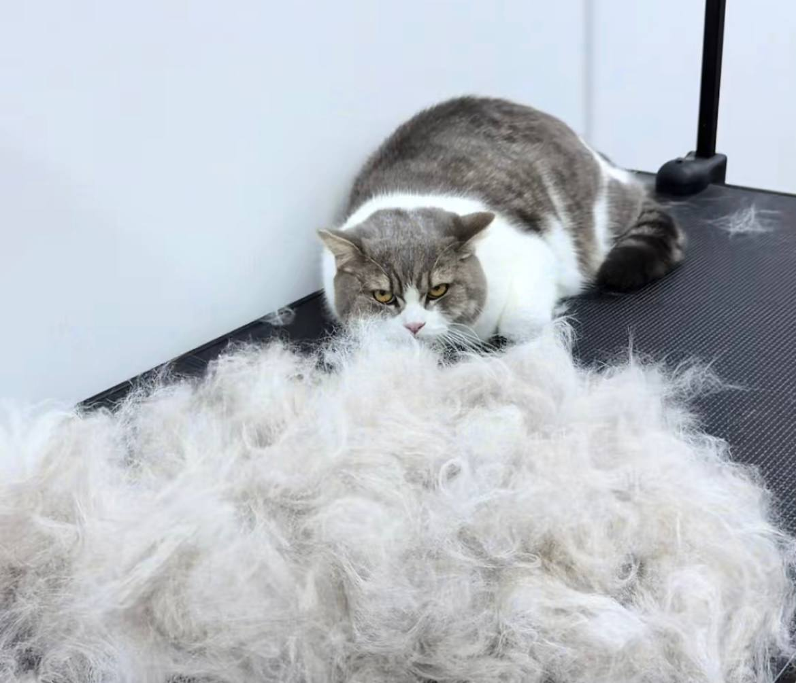
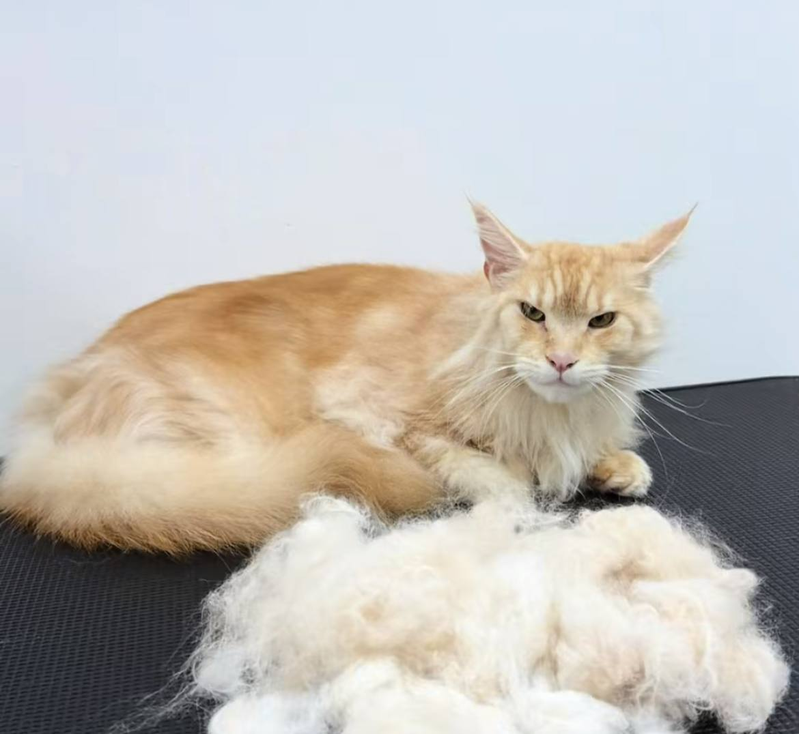

Про салон
«Мейн-Мур» — це салон грумінгу для котів, де кожен гість стає головним пухнастиком дня. Ми працюємо спокійно, без поспіху й без гучних звуків, щоб візит був приємним і для кота, і для його господаря.
Чому саме мейнкуни?
Мейн-кун — одна з найбільших порід домашніх котів: з довгою шовковистою шерстю, пухнастим хвостом і китицями на вухах. Така шерсть дуже гарна, але вона потребує регулярного догляду, інакше в ній швидко з'являються ковтуни.
Ми добре знаємо особливості цієї породи, тому для мейнкунів підбираємо окремі гребінці та делікатні засоби. Водночас до нас охоче приходять коти інших порід — усім знайдеться місце на м'якому килимку.
Як ми працюємо?
Перед процедурою кіт знайомиться з майстром і спокійно оглядає кімнату. Усі етапи проходять у комфортному для тварини темпі, з перервами на відпочинок і ласки.
Після грумінгу кожен відвідувач отримує смаколик, а господар — пораду, як доглядати за шерстю вдома між візитами.


Послуги
- Купання та сушіння делікатними засобами
- Вичісування та видалення ковтунів
- Гігієнічна стрижка
- Догляд за кігтиками, вушками та очима
Як проходить візит
- Знайомство кота з майстром
- Огляд шерсті та шкіри
- Купання або вичісування
- Сушіння та фінальний догляд
Часті запитання
Скільки триває візит?
Від 40 хвилин до 2 годин залежно від довжини шерсті та обраної послуги.
Чи можна приходити з кошеням?
Так, але купати кошенят можна з 3 місяців, після першої вакцинації.
Як часто потрібно вичісувати мейнкуна?
Для довгошерстих котів — щонайменше раз на тиждень, а під час линьки частіше.
Записи на грумінг
| Кличка | Порода | Послуга | Дата візиту | Вага, кг | Підтверджено | Видалити |
|---|